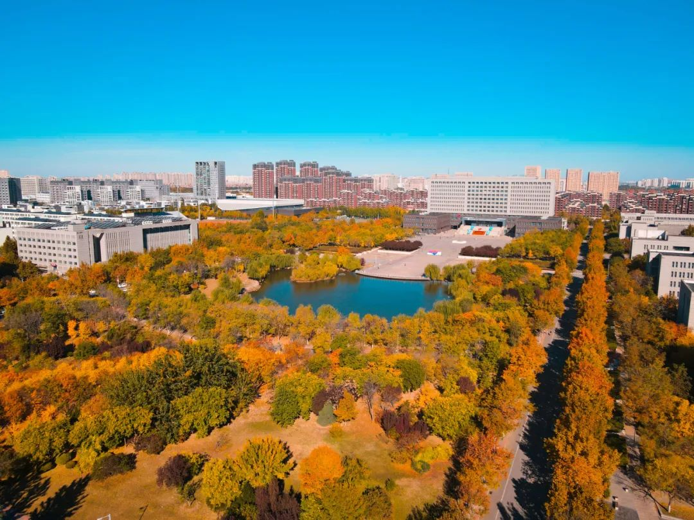
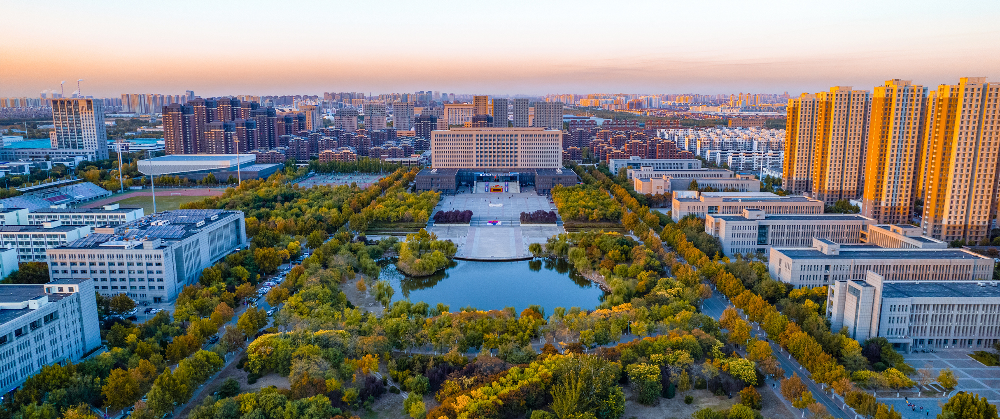
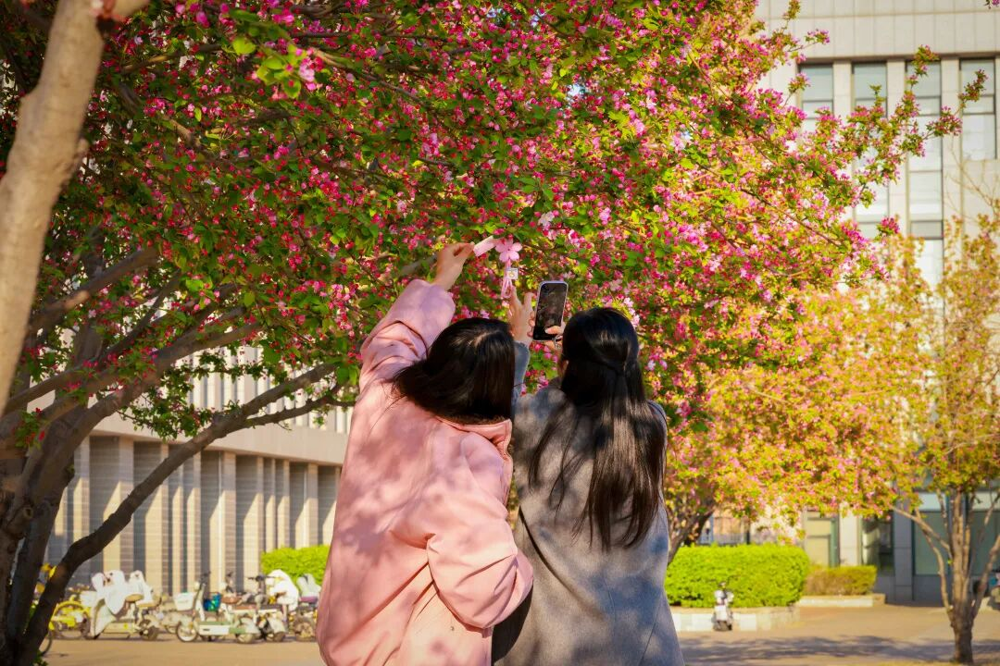
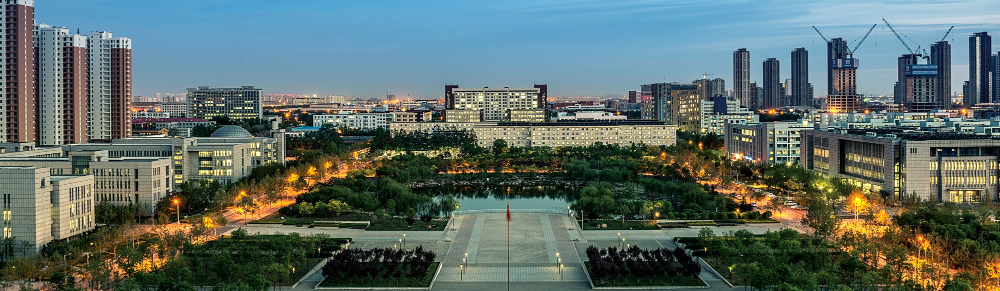

CHAPTER 01 / SEE
校园风光
同一条路，会被四季写成四种不同的句子。
Tianjin Chengjian University
天城大的美并不只在某个“打卡点”。它藏在图书馆玻璃上的春光里，藏在中心湖边被风吹皱的倒影里，也藏在秋天放慢脚步的一条小路上。








CHAPTER 01 / SEE
同一条路，会被四季写成四种不同的句子。
天城大的美并不只在某个“打卡点”。它藏在图书馆玻璃上的春光里，藏在中心湖边被风吹皱的倒影里，也藏在秋天放慢脚步的一条小路上。



